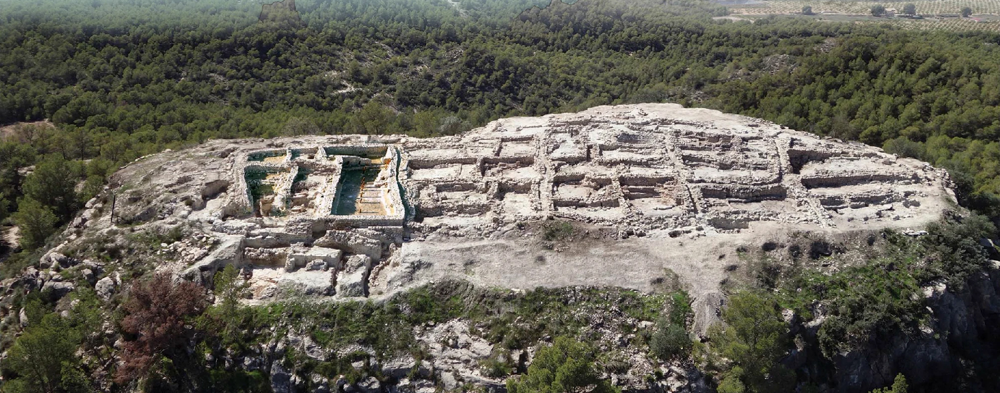

Historia
En los años cuarenta, un arqueólogo, Emeterio Cuadrado Díaz, y un apasionado de las antigüedades, Juan de la Cierva López, emprendieron el camino hacia uno de los mayores avances del estudio de la cultura argárica. Dentro de la finca La Esperanza, entre Pliego y Mula, un chato montículo de 3.000 metros cuadrados les llamó la atención. El primero, ingeniero de profesión y arqueólogo de afición, y el segundo, propietario de la finca, iniciaron una expedición a La Almoloya, un lugar que por su ubicación y primeros atisbos podría contener un secreto. Encontraron nada más ni nada menos que las bases de uno de los yacimientos más importantes de la Edad del Bronce conocidas hasta hoy. Más de cuatro mil años guardados en roca caliza. La Almoloya data del año 2200 antes de nuestra era y se estima que tuvo una duración de seis siglos. Sin embargo, desapareció en el 1550 a.C. Su descubrimiento en este siglo XX marcó precedentes con la estructura que saldría a la luz 70 años después. Y se unió a los hallazgos encontrados en el siglo XIX: El Argar, La Bastida, Ifre, entre otros asentamientos relacionados. "LA PRESENCIA DE UNA ORGANIZACIÓN POLÍTICA COMO EL PARLAMENTO, LA DIVISIÓN DE CLASES Y LA EXISTENCIA DE ALABARDEROS HACEN DE LA ALMOLOYA UN PUNTO IMPRESCINDIBLE EN LA HISTORIA DE LA EDAD DEL BRONCE" En 1944, Juan y Emeterio descubrieron el yacimiento. Durante cuatro días, entre junio y agosto, exploraron el terreno. Los resultados confirmaron lo encontrado en el yacimiento de La Bastida. Estaban ante los restos de una civilización prehistórica, específicamente de la Edad del Bronce. En esta primera aproximación descubren tumbas y lo que serían las paredes de distintas viviendas en un mismo lugar, así como piezas de artesanía; las cuales algunas fueron trasladadas para confirmar su origen, con los arqueólogos Siret, quienes se habían encargado de documentar, no sólo en manuscritos, sino en fotografías y dibujos, gran parte de los hallazgos de la Prehistoria del sudeste peninsular, así lo plantea Emeterio en su publicación La Almoloya, un poblado de la cultura El Algar. De las primeras imágenes del yacimiento La Almoloya. Foto: Archivo General de la Región de Murcia.. Foto De las primeras imágenes del yacimiento La Almoloya. Foto: Archivo General de la Región de Murcia.. Foto Lo que descubrieron apenas sería una reducida parte de los que escondía aquel lugar. Hoy se sabe que este enclave se desarrolló como una ciudad. Se estima que vivieron unas 300 personas, en núcleos familiares de ocho a doce convivientes. Otra de las prácticas de la cultura argárica es la de las inhumaciones en casa. Bien se pudo establecer como una necrópolis, por la cantidad de tumbas encontradas. La verdad es que se sabía que los ciudadanos de esta civilización realizaban los enterramientos en sus domicilios. Después de esta primera toma de contacto con los restos, no se continuó con las investigaciones. La zona fue expoliada y parte de lo que en esa primera excavación se observó casi desaparece en su totalidad. Sin embargo, ya en el año 2013, un equipo de arqueólogos e investigadores, de la Universidad Autónoma de Barcelona (UAB), liderados por Vicente Lull inician una nueva excavación. Parten de la base descrita por Cuadrado y De la Cierva, para profundizar en lo que hace casi setenta años antes se empezó. Una serie de hallazgos marcarían este enclave como uno de los más importantes de la región peninsular. Una diadema, incendios y cebada, riquezas halladas Los resultados no tardaron en llegar y surge una gran sala en la que se aprecia un banco continuo en sus paredes. Un lugar de reuniones, lo que se conoce como el primer parlamento europeo que data de hace más de 4.000 años. La presencia de una organización política como el parlamento, la división de clases que se aprecia entre sus tumbas y la existencia de alabarderos hacen de La Almoloya un punto de interés imprescindible en la historia de la Edad del Bronce en la península ibérica. Sala que se considera como punto de reunión de los representantes de la época, lugar del primer parlamento europeo. Foto: ASOME-UAB.: Sala que se considera como punto de reunión de los representantes de la época, lugar del primer parlamento europeo. Foto: ASOME-UAB.: Este enclave fue el centro político administrativo importante, donde hubo concentración de riqueza de primer nivel así como la organización que se presume afectaría a todo su entorno. La existencia de un salón de reuniones como este y la distribución del banco que había en su interior con las distintas alturas que en el se ubican plantean el supuesto de un organización social por divisiones. Es decir, que existían una especie de clases sociales o personas con mayor poder. Se calcula que tenía una capacidad de 50 a 60 personas, sentadas en todo su recorrido. El recinto cuenta con unos 70 metros cuadrados. Cada uno de los datos presentados se encuentran en la guía arqueológica, La Almoloya. Ruta argárica 2. Otro de los descubrimientos que llamarían la atención del gremio, en especial de los estudiosos de la Edad del Bronce, sería una tumba con en la que se encontraron dos cuerpos, un hombre y una mujer, que presentaban un gran ajuar, no sólo por la cantidad de ofrendas, sino por la calidad y valor de lo que en él se halló. Se le conoce como la tumba ‘principesca’. Para el grupo de investigadores supuso un antes y un después. Tal descubrimiento se dio en el suelo del ‘parlamento’ en la zona de mayor relevancia del mismo, donde anteriormente se ubicaron en el resto del salón otras tumbas de personas sin recursos, lo que planteó la duda de por qué los enterrarían ahí. Uno de los supuestos es que al no tener casa, los enterraban de manera superficial y en cistas de menor tamaño, de ahí la posición de los cuerpos. Diadema de apéndice en disco encontrada en la cabeza de la tumba 'principesca' localizada en el yacimiento de La Almoloya. Foto: ASOME-UAB. Diadema de apéndice en disco encontrada en la cabeza de la tumba 'principesca' localizada en el yacimiento de La Almoloya. Foto: ASOME-UAB. El ajuar funerario contaba con unos 30 objetos; la mayoría eran de plata, otro poco de oro y el resto entre cobre y bronce. Collares con cuentas de distintos materiales (concha, marfil y ámbar), así como vasijas y ofrendas de carne de vacuno. La pieza que encabeza esta colección es la diadema de plata con apéndice en forma de disco, hallada sobre la cabeza de la mujer. Que representa otro signo de poder y diferencia de clases en esa era. Otro de los descubrimientos de La Almoloya que llamó la atención fue encontrar restos orgánicos, que permitieron la identificación de la cebada como uno de los cereales de su alimentación. Esto se debe a que la zona vivió varios incendios y la materia orgánica al carbonizarse se conservó, de otra manera, no hubiese sido posible. Esto permitió que se mantuviera su huella con el paso del tiempo. Otro punto que llamó la atención fue encontrar roca volcánica, no hay registro de ella en toda la Región, por lo que se presume que la trasladaron para su uso en los molinos. Con un 80% del yacimiento estudiado, sólo queda seguir y conservar. Hay que destacar que es el emplazamiento de la Edad del Bronce más estudiado de la Región, en comparación con el 10% que presenta el asentamiento de La Bastida. Más allá de los investigadores, queda el trabajo de los ciudadanos desde su conservación, conocimiento y difusión. En el Museo de la Ciudad de Mula ya se puede visitar la exposición con los hallazgos hallazgos de la tumba principesca y otros objetos de gran valor relacionados con el yacimiento. Solicitan la protección al Gobierno nacional A finales de julio, el PP solicitó ante la Asamblea Regional la inclusión de La Almoloya en el programa de fondos del Instituto de Patrimonio Cultural por parte del Gobierno nacional. Buscan que garantice el resguardo y adecuado aprovechamiento como bien turístico del lugar, tanto para Pliego como para la Región de Murcia. En palabras de la diputada del PP Isabel María Pérez, "por ser El Argar parte de la prehistoria única en el levante español con especial relevancia en los asentamientos descubiertos en nuestra Región".
